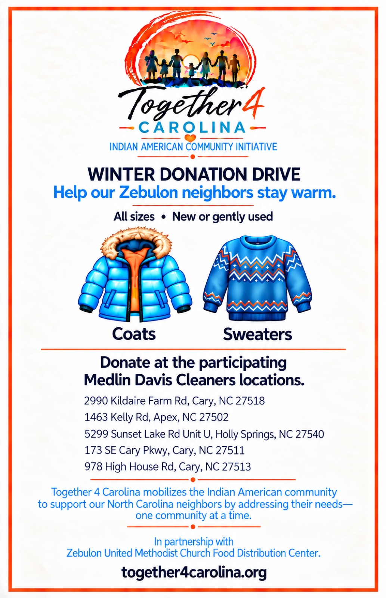
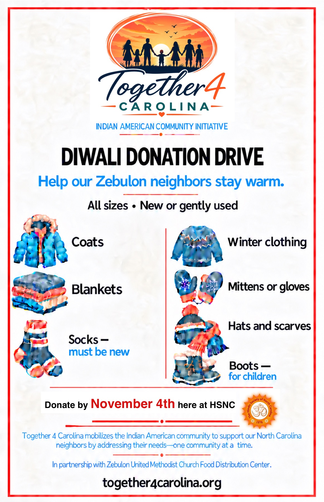
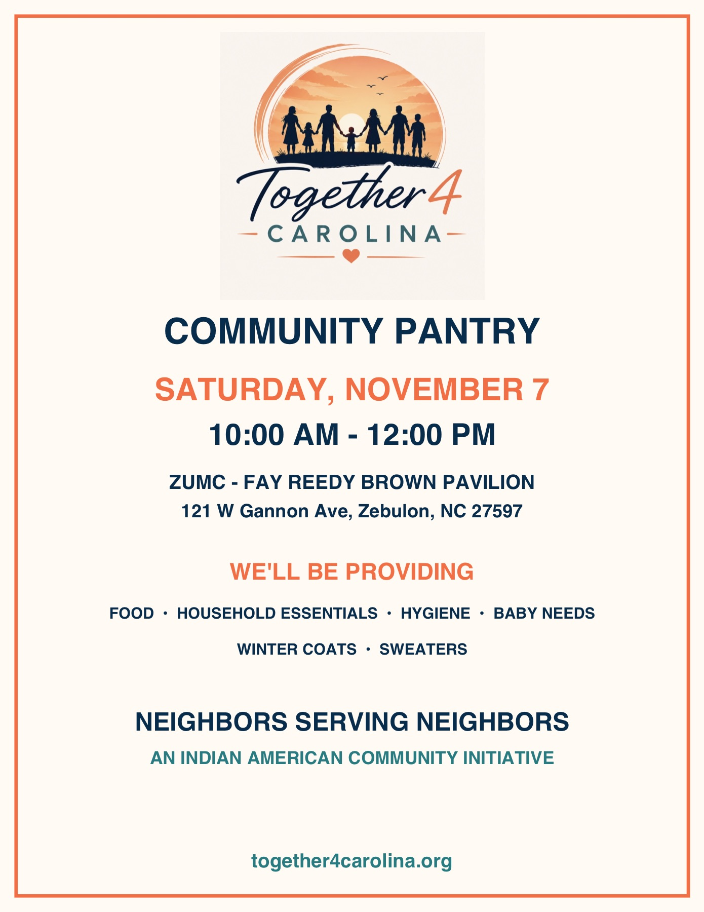

Food
1 in 5
children in NC is food insecure
Indian American Community Initiative
Rooted in Values. Driven with Compassion. Focused on North Carolina.
Together 4 Carolina is an initiative that mobilizes the Indian American community to engage with and serve families across North Carolina that are too often overlooked. Our approach is to focus on one township at a time — building trusted partnerships, delivering measurable results, and growing thoughtfully so the impact is sustainable.
Many of us are second- and third-generation Americans. While our careers, communities, and lives have evolved, the values passed down through our families remain remarkably consistent. Just as importantly, we were taught the values of kindness, generosity, and showing up for our neighbors when they need us most.
These values shaped us. Today, they guide how we serve North Carolina.
We show love through delicious spicy food. There’s always food for an extra mouth or for an unexpected guest stopping by. As when an auntie insists you take seconds, sharing food is an expression of love.
We believe no family should have to wonder where their next meal is coming from.
We have tightly knit communities and help anyone in need. We treat everyone with respect, especially our elders. If your neighbor is not feeling well, we tend to show up with a bowl of curd rice or a cup of soup.
We believe every family deserves access to the care they need to live healthy, productive lives.
For generations, Indian American families have viewed education as a pathway to opportunity. Behind every school drop-off is the belief that learning can change the future.
We believe every child deserves the opportunity to learn, grow, and reach their full potential.
We speak different languages, eat different types of food, and have different festivals. And yet, we are united as one community. What binds us is mutual respect, acceptance, and our shared values.
We believe our diversity makes us stronger.
The values we grew up with are more important than ever. Across North Carolina, too many families face challenges that limit opportunity and well-being. These aren’t just statistics. They’re our neighbors, classmates, and communities.
That’s why Together 4 Carolina focuses on practical solutions that reflect the values we hold dear.
1 in 5
children in NC is food insecure
13 vs. 36
physicians per 10,000 in rural NC vs. urban counties
$1,632
average annual out-of-pocket spend by NC teachers on school supplies
2 in 5
children are clothing insecure
Focus on a township.
We analyze community data, local needs, and existing resources to identify where support can have the greatest impact.
Understand what matters most.
We meet with local leaders, schools, families, and community organizations to learn about their most pressing needs.
Build a focused action plan.
Together with local stakeholders, we identify the highest-impact opportunities and create a practical roadmap for action.
Mobilize people and partnerships.
We bring together volunteers, donors, healthcare professionals, nonprofits, schools, and local organizations to deliver meaningful support.
Track outcomes and improve.
We measure results, share progress transparently, and use what we learn to strengthen future efforts.
After researching communities across North Carolina, we decided to start by focusing on Zebulon. After meeting with local community leaders, educators, and families, we came up with the game plan below — built with the community, not for them. It centers on two complementary themes:
Provide periodic support to Zebulon families across five areas:
Food, healthy snacks and baby food.
Everyday and seasonal clothing, shoes and coats.
Laundry, cleaning and basic household supplies.
Personal care and feminine hygiene products.
Diapers, wipes and other essential baby supplies.
Partner with Zebulon schools to prepare kids for a brighter future, aligned with school priorities and student goals.
Literacy and math tutoring, school pantries, and learning supplies — in partnership with educators.
Career exploration, skilled-trade and college pathways, and mentorship — helping students form a next-step plan.
We are proud to be partnering with the Zebulon United Methodist Food & Baby Pantry to help reach families and deliver support where it is needed most. We held our first Community Pantry in Zebulon on Saturday, September 26th. Mayor Jessica Harrison joined us for the kickoff. We also provided food and educational supplies to 2 Zebulon schools.
We are partnering with Medlin Davis, HSNC, SV Temple, and BAPS Temple to collect winter clothes for families in Zebulon.


We are hosting a Community Pantry on Saturday, November 7, from 10:00 AM to 12:00 PM at the Zebulon United Methodist Church Fay Reedy Brown Pavilion, 121 W Gannon Ave.

We plan on sharing 100 turkeys to celebrate Thanksgiving together.
Whether you volunteer, partner, or give — your support helps families thrive.
Want to help — or hear what's next? Reach us at Together4Carolina@gmail.com.